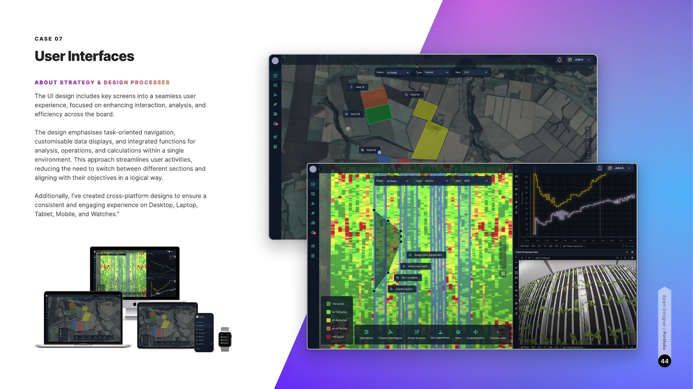

For a global crop-protection leader, I performed competitor analysis and developed an expansion strategy for current and upcoming products — delivering wireframes, detailed design documentation, and three strategies to improve the company's 12 key applications, processes, and design methodologies.